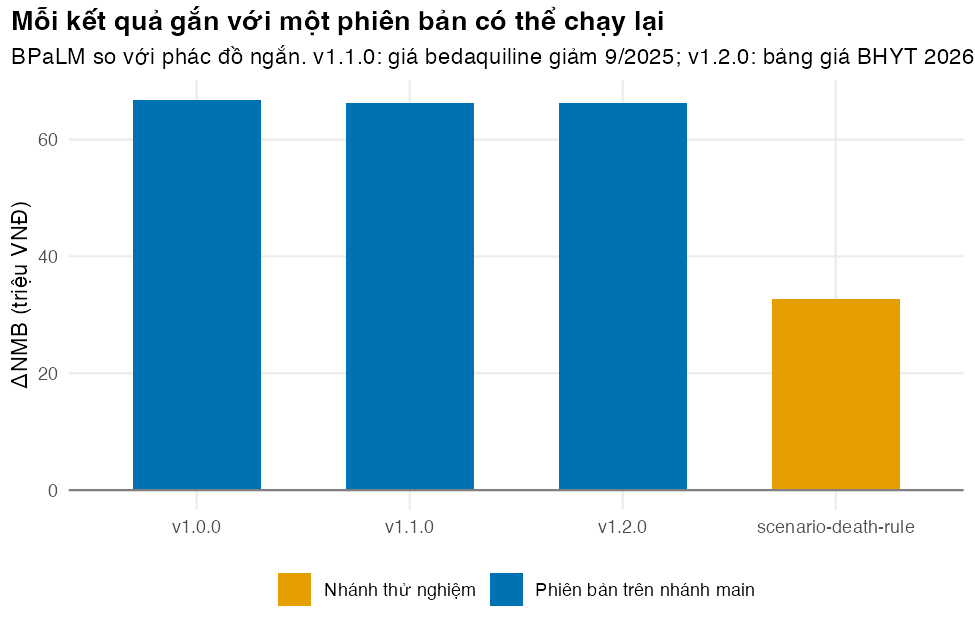

# Vietnamese text in tables and figures needs a UTF-8 locale (Rscript may start in "C")
if (!isTRUE(l10n_info()[["UTF-8"]])) invisible(Sys.setlocale("LC_CTYPE", "en_US.UTF-8"))
source("../_shared/R/helpers.R")
source("../_shared/R/vn_data.R")
source("code/model.R")
library(ggplot2)
stopifnot(nzchar(Sys.which("git"))) # Git must be installed
git_version <- system2("git", "--version", stdout = TRUE)
repo <- file.path(tempdir(), "mdrtb-model")
unlink(repo, recursive = TRUE)
dir.create(repo)
# Run one git command inside the repository and return its output lines. The -c
# settings switch off personal global options (commit signing, hooks) for this demo.
git <- function(...) {
out <- system2("git", c("-C", shQuote(repo), "-c", "commit.gpgsign=false",
"-c", "tag.gpgSign=false", "-c", "core.hooksPath=/dev/null", ...),
stdout = TRUE, stderr = TRUE)
if (!is.null(attr(out, "status"))) stop("git failed:\n", paste(out, collapse = "\n"))
invisible(out)
}
read_param_table <- function(path) {
utils::read.csv(path, stringsAsFactors = FALSE, encoding = "UTF-8")
}
# The complete parameter table of the model: M02's file + the shared course values. The
# repository keeps a SNAPSHOT of it, so that a tag still reproduces its result after
# kb/_shared has moved on (write_param_table() writes one value per line, no scientific
# notation, so that a changed value shows up as exactly one changed line in git diff)
tab_base <- assemble_params("../m02-cohort-markov/params/mdrtb.csv", "../_shared")
param_path <- "params/mdrtbvn-params.csv"
# Write the release number into the model file of the repository (the line MODEL_VERSION <- "x.y.z"),
# so that run_model() reports the tag that produced a result
set_model_version <- function(version) {
path <- file.path(repo, "code/model.R")
src <- readLines(path)
i <- grep("^MODEL_VERSION <- ", src)
stopifnot(length(i) == 1)
src[i] <- sprintf("MODEL_VERSION <- \"%s\"", version)
writeLines(src, path)
}Bài 3: Quản lý phiên bản với Git và tái lập môi trường với renv
Gắn mỗi kết quả với một phiên bản chạy lại được của mã và tham số
Vì sao bạn nên quan tâm?
Giá một đợt BPaLM của Global Drug Facility giảm liên tục: US$588 (12/2022), US$364 (2/2025), US$310 (4/2025) rồi US$284 (9/2025), tức 3 lần giảm chỉ trong năm 2025 (European AIDS Treatment Group 2025a, 2025b; ITPC-EECA 2025). Riêng mức giảm từ 2022 đã là khoảng 7.6 triệu VNĐ cho mỗi người bệnh, bằng khoảng 1.4 tháng lương tối thiểu vùng I (Chính phủ 2025). Mỗi lần giá hay bảng giá BHYT đổi, kết quả của mô hình đổi theo; một năm sau, sở y tế hỏi “con số trong tờ trình là của bản nào?”. Bài này giúp bạn quyết định cách ghi và gắn nhãn từng thay đổi để trả lời câu hỏi đó bằng một lệnh.
Mục tiêu học tập
Sau bài này, bạn có thể:
- Giải thích vì sao quản lý phiên bản (version control) tốt hơn các bản
v1,v2,final, và dùng đúng các khái niệm commit, diff, nhãn phiên bản (tag), nhánh (branch), kho từ xa (remote). - Ghi mỗi thay đổi thành một commit có ý nghĩa, kiểm tra bản cập nhật bằng chứng trước khi commit, gắn nhãn cho mỗi phiên bản đã báo cáo, và chạy lại một phiên bản cũ.
- Thử một kịch bản trên nhánh riêng mà không ảnh hưởng nhánh chính, và mô tả cộng tác qua GitHub.
- Ghi lại phiên bản gói R bằng tệp khóa
renv.lock, và nêu những gìrenvkhông ghi lại.
Ý chính
- Mỗi con số trong báo cáo phải truy được về số phiên bản mô hình (nhãn Git, do
run_model()in ra) và mã bảng tham số (param_id). Cặp này xác định đúng mã và đúng tham số đã tạo ra nó. - Kho mã (repository) giữ một ảnh chụp của bảng tham số đầy đủ, kể cả giá trị chung của khóa học: một nhãn cũ vẫn cho đúng kết quả cũ dù
kb/_sharedđã đổi. - Commit nhỏ, mỗi commit một thay đổi logic, thông điệp nói vì sao;
git diffcho thấy cái gì đã đổi. Trước khi commit một bản cập nhật, tính lại nó từ nguồn. - Gắn nhãn phiên bản (MAJOR.MINOR.PATCH) cho mọi kết quả dùng ngoài nhóm, và sửa
MODEL_VERSIONtrong cùng commit với nhãn. - Thử nghiệm trên nhánh riêng;
mainchỉ chứa mô hình đã qua kiểm thử. - Không commit đầu ra, dữ liệu nhạy cảm hay thư viện gói; đặt kho Git ngoài thư mục đồng bộ đám mây.
renv.lockghi phiên bản chính xác từng gói; commit nó từ đầu.
Nội dung
Vì sao không dùng v1, v2, final
Tệp model_final_v3_sua.xlsx không cho biết ai sửa gì, khi nào, vì sao, và không cho cách quay lại đúng phiên bản đã gửi cho hội đồng. Git ghi lại mọi thay đổi của từng tệp theo thời gian, cho phép so sánh và khôi phục bất kỳ phiên bản nào (Blischak, Davenport, và Wilson 2016); với người làm phân tích, nó nên là thói quen chứ không chỉ là công cụ của lập trình viên (Bryan 2018). Câu hỏi then chốt với mô hình kinh tế y tế là: tỷ số chi phí-hiệu quả gia tăng (ICER) trong báo cáo năm ngoái do mã nào và tham số nào tạo ra? Có Git và nhãn phiên bản, câu trả lời là một lệnh.
Các khái niệm cốt lõi
| Khái niệm | Nghĩa | Lệnh |
|---|---|---|
| kho mã (repository) | thư mục dự án cùng toàn bộ lịch sử thay đổi | git init |
| commit | một ảnh chụp các tệp, kèm thông điệp và tác giả | git add, git commit -m |
| diff | khác biệt giữa hai ảnh chụp | git diff |
| nhãn phiên bản (tag) | tên cố định gắn với một commit, ví dụ v1.1.0 |
git tag -a |
| nhánh (branch) | một dòng phát triển song song | git switch -c |
| hợp nhất (merge) | đưa thay đổi của một nhánh vào nhánh khác | git merge |
| kho từ xa (remote) | bản sao trên máy chủ, ví dụ GitHub | git push, git pull |
| yêu cầu hợp nhất (pull request) | đề nghị đưa một nhánh vào main, có người rà soát mã |
trên GitHub |
Sách Pro Git, đọc miễn phí trực tuyến, giải thích từng lệnh (Chacon và Straub 2014). Các lệnh thường dùng nhất, gõ trong terminal tại thư mục dự án:
git status # what has changed since the last commit?
git add params/mdrtbvn-params.csv
git commit -m "GDF bedaquiline price cut (9/2025): drug costs of the short and long regimens"
git log --oneline # history, newest first
git diff v1.0.0 v1.1.0 # what changed between two tagged versions
git tag -a v1.1.0 -m "Version used in the provincial budget proposal"
git push --follow-tags # send commits and tags to GitHubQuy trình cho người làm mô hình
- Một thay đổi, một commit: cập nhật giá thuốc một commit, áp bảng giá BHYT mới một commit khác; khi kết quả đổi,
git logcho biết vì sao. - Tính lại bản cập nhật từ nguồn trước khi commit. Một con số trong tệp cập nhật là bản chép; script kiểm tra nó khớp với phép tính từ tệp nguồn (ở đây: bảng giá chung và lịch sử giá GDF).
- Nhãn cho mọi kết quả dùng bên ngoài. Khóa học dùng quy ước phiên bản ngữ nghĩa (semantic versioning) (Preston-Werner 2013; Perez-Riverol và c.s. 2016), diễn giải cho mô hình: PATCH khi sửa lỗi không đổi thiết kế; MINOR khi cập nhật bằng chứng hoặc thêm chức năng; MAJOR khi đổi cấu trúc hay cách gọi hàm. Số này nằm trong
MODEL_VERSIONcủacode/model.R, được sửa cùng commit với nhãn. - Mã bảng tham số. Hai nhánh có thể cùng số phiên bản nhưng khác tham số.
param_fingerprint()rút bảng tham số thành 8 ký tự (tổng kiểm MD5 của các giá trị);run_model()trả về cả hai. - Nhánh cho thử nghiệm, chỉ hợp nhất vào
mainkhi kiểm thử (Bài 2) đạt. Cộng tác qua kho từ xa: mỗi người một nhánh, mở yêu cầu hợp nhất, đồng nghiệp rà soát; dùng “issue” ghi câu hỏi và lỗi. GitHub có kho riêng (private) và tích hợp liên tục (Perez-Riverol và c.s. 2016). Dữ liệu chịu hạn chế pháp lý, như dữ liệu người bệnh, không được vào hệ thống công khai (Wilson và c.s. 2017). - Biết cái gì không commit: đầu ra (hình, HTML) tạo lại được từ mã; thư viện gói dựng lại được từ tệp khóa; dữ liệu cá nhân và mật khẩu không thuộc kho mã (Wilson và c.s. 2017).
Tái lập môi trường với renv
Cùng mã, cùng tham số vẫn có thể cho kết quả khác nếu phiên bản gói khác (một hàm đổi giá trị mặc định). Ghi lại phiên bản phần mềm là quy tắc cơ bản của nghiên cứu tính toán tái lập được (Sandve và c.s. 2013). renv cho mỗi dự án một thư viện gói riêng và một tệp khóa renv.lock (định dạng JSON) ghi phiên bản chính xác của từng gói. Quy trình gồm ba lệnh: renv::init() khi bắt đầu, renv::snapshot() sau khi cài hoặc cập nhật gói, renv::restore() trên máy khác (Ushey và Wickham 2026). Tệp renv.lock được commit từ commit đầu tiên; thư mục renv/library/ thì không. renv ghi phiên bản R nhưng không cài R cho bạn, và không ghi hệ điều hành hay thư viện hệ thống; khi cần tái lập trọn vẹn, dùng thêm container (ví dụ Docker), tối thiểu lưu sessionInfo() cùng kết quả.
Thực hành
Phần thực hành chạy Git từ R, trong một thư mục tạm. git() chạy một lệnh Git và báo lỗi nếu thất bại; set_model_version() ghi số phiên bản vào model.R của kho; assemble_params() ghép bảng tham số đầy đủ mà kho sẽ giữ ảnh chụp. Kiểm tra: Git đã được cài.
Trước commit đầu tiên, để renv quét mã của module tìm các gói được dùng và ghi chúng vào renv.lock trong kho. Kiểm tra: bảng liệt kê các gói ngoài base R mà module gọi.
# renv first, BEFORE the first commit: then every tagged version contains the lockfile of
# its own time. renv scans the code for library() and pkg:: calls ...
deps <- renv::dependencies(".", progress = FALSE, dev = FALSE)
pkgs <- sort(unique(deps$Package))
ip <- utils::installed.packages()
base_pkgs <- rownames(ip)[ip[, "Priority"] %in% "base"] # shipped with R itself
not_installed <- setdiff(pkgs, rownames(ip)) # e.g. our own package, built in Lesson 4
pkgs <- setdiff(intersect(pkgs, rownames(ip)), base_pkgs)
pkg_tab <- data.frame(package = pkgs,
version = vapply(pkgs, function(x) utils::packageDescription(x, fields = "Version"), ""),
row.names = NULL)
knitr::kable(pkg_tab, col.names = c("Gói", "Phiên bản đang dùng"))| Gói | Phiên bản đang dùng |
|---|---|
| codetools | 0.2-20 |
| ggplot2 | 4.0.2 |
| knitr | 1.51 |
| renv | 1.2.0 |
| rmarkdown | 2.30 |
| shiny | 1.13.0 |
| testthat | 3.3.2 |
# ... and records the exact versions (and their dependencies) in renv.lock
lock <- renv::lockfile_create(packages = pkgs, project = repo, prompt = FALSE, type = "all")
invisible(capture.output(renv::lockfile_write(lock, file = file.path(repo, "renv.lock"))))
n_locked <- length(lock$Packages)
c(direct = length(pkgs), locked_with_dependencies = n_locked, R = lock$R$Version) direct locked_with_dependencies R
"7" "63" "4.5.3" stopifnot(file.exists(file.path(repo, "renv.lock")), n_locked >= length(pkgs))Module gọi trực tiếp 7 gói ngoài base R, nhưng tệp khóa ghi 63 gói vì nó ghi cả các gói phụ thuộc: danh sách library() ở đầu script không đủ để tái lập môi trường.
Máy này dùng Git 2.51.2. Tạo kho với mã mô hình, kiểm thử, ảnh chụp bảng tham số, renv.lock và .gitignore. Trước khi commit, tạo ba tệp không được vào kho (một hình, một tệp dữ liệu thô, một báo cáo HTML) và xem Git có bỏ qua chúng không. Kiểm tra: danh sách tệp theo dõi có renv.lock và bảng tham số nhưng không có ba tệp kia; git check-ignore -v nêu quy tắc chặn từng tệp.
# A project snapshot: model code, tests, the parameter table, a .gitignore (and renv.lock,
# written above). First, create three files that must NOT be committed: an output, raw
# data and a rendered report. Then let Git show that it ignores them.
for (d in c("code", "params", "tests/testthat", "figs", "data/raw")) {
dir.create(file.path(repo, d), recursive = TRUE, showWarnings = FALSE)
}
invisible(file.copy("code/model.R", file.path(repo, "code")))
invisible(file.copy(list.files("tests/testthat", full.names = TRUE), file.path(repo, "tests/testthat")))
write_param_table(tab_base, file.path(repo, param_path))
writeLines(c("# Outputs are regenerated by code: do not commit them",
"figs/", "outputs/", "*.html", "*_files/",
"# Personal R files and package libraries",
".Rhistory", ".RData", ".Rproj.user/", "renv/library/",
"# Data that must not leave the machine",
"data/raw/"), file.path(repo, ".gitignore"))
writeLines("placeholder", file.path(repo, "figs/example.png"))
writeLines("id,age", file.path(repo, "data/raw/patients.csv"))
writeLines("<html></html>", file.path(repo, "report.html"))
git("init", "-q", "-b", "main")
git("config", "user.name", shQuote("Hoc vien M11"))
git("config", "user.email", "hocvien@example.org")
git("add", ".")
tracked <- git("ls-files")
cat(tracked, sep = "\n") # the files Git now tracks.gitignore
code/model.R
params/mdrtbvn-params.csv
renv.lock
tests/testthat/golden-m02.rds
tests/testthat/helper-model.R
tests/testthat/test-golden-master.R
tests/testthat/test-inputs.R
tests/testthat/test-results.R
tests/testthat/test-scenarios.R
tests/testthat/test-trace.Rignored <- git("check-ignore", "-v", "figs/example.png", "data/raw/patients.csv", "report.html")
cat(ignored, sep = "\n") # which .gitignore rule ignored each file.gitignore:2:figs/ figs/example.png
.gitignore:12:data/raw/ data/raw/patients.csv
.gitignore:4:*.html report.htmlstopifnot(length(ignored) == 3, "renv.lock" %in% tracked, param_path %in% tracked,
!any(grepl("^figs/|^data/|\\.html$", tracked)))
git("commit", "-q", "-m", shQuote("Add MDR-TB cohort model refactored from M02, with a snapshot of the shared inputs"))
git("tag", "-a", "v1.0.0", "-m", shQuote("Base case, as in M02"))Hai bản cập nhật bằng chứng dựa trên sự kiện có thật nằm trong params/: giá bedaquiline của GDF giảm tháng 9/2025, áp lên giá cả đợt của phác đồ ngắn và phác đồ dài hạn (bảng giá chung ghi giá tháng 3/2025), và bảng giá BHYT 2026 của Bệnh viện Bạch Mai (Bộ Y tế 2026). Trước khi commit, tính lại từng con số từ nguồn. Kiểm tra: cột in_file khớp cột recipe đến từng đồng.
# Before an update is committed, re-derive its numbers from their sources: a hand-typed
# value that no longer matches its recipe (or a source that has moved) stops the script.
# Update 1: GDF bedaquiline price cut (9/2025), applied to the shared course prices of the
# short and long regimens. Update 2: 2026 BHYT prices (QD 1519/QD-BYT), column `high` of
# the shared price list where a 2026 price exists, else the 2025 price.
ctx <- vn_context()
pr <- vn_prices()
pr_tab <- attr(pr, "table")
gdf <- read_params("params/gdf-prices.csv")
p0 <- params_from_table(tab_base)
bdq_cut_vnd <- (gdf$gdf_bdq_2025_02 - gdf$gdf_bdq_2025_09) * ctx$fx_vnd_per_usd
price_2026 <- function(items) {
i <- match(items, pr_tab$name)
sum(ifelse(is.na(pr_tab$high[i]), pr_tab$value[i], pr_tab$high[i]))
}
recipe <- c(c_drug_short = (pr[[DRUG_PRICE_ITEMS[["short"]]]] - bdq_cut_vnd) / p0$dur_short,
c_drug_long = (pr[[DRUG_PRICE_ITEMS[["long"]]]] - bdq_cut_vnd) / p0$dur_long,
c_monitor = price_2026(MONITOR_ITEMS), c_eot = price_2026(EOT_ITEMS),
c_failed = price_2026(FAILED_ITEMS))
upd <- rbind(read_param_table("params/update-01-price.csv"), read_param_table("params/update-02-monitoring.csv"))
recipe_check <- data.frame(name = names(recipe), base = unlist(p0[names(recipe)]),
in_file = upd$value[match(names(recipe), upd$name)], recipe = unname(recipe),
row.names = NULL)
recipe_check name base in_file recipe
1 c_drug_short 857303.3 782393 782393.3
2 c_drug_long 676964.4 639509 639509.4
3 c_monitor 565100.0 587700 587700.0
4 c_eot 499100.0 516100 516100.0
5 c_failed 50600.0 52600 52600.0stopifnot(all(abs(recipe_check$in_file - recipe_check$recipe) < 1)) # rounded to whole VNDCommit từng bản, mỗi bản một nhãn, kèm số phiên bản mới trong model.R. Kiểm tra: git diff giữa v1.0.0 và v1.1.0 trên bảng tham số chỉ có một dòng bị bỏ và một dòng được thêm cho mỗi tham số đổi; --stat cho thấy đúng hai tệp đổi.
# Commit each evidence update: one logical change per commit, a message that says why, a
# new release number written into the model file, and a tag with the same number. The
# parameter table and the release number change in the same commit.
commit_update <- function(update_file, message, tag) {
path <- file.path(repo, param_path)
updated <- apply_updates(read_param_table(path), read_param_table(update_file))
write_param_table(updated, path)
set_model_version(sub("^v", "", tag))
git("add", param_path, "code/model.R")
git("commit", "-q", "-m", shQuote(message))
git("tag", "-a", tag, "-m", shQuote(paste("Model version", tag)))
attr(updated, "changes")
}
changes_1 <- commit_update("params/update-01-price.csv",
"GDF bedaquiline price cut (9/2025): drug costs of the short and long regimens", "v1.1.0")
changes_2 <- commit_update("params/update-02-monitoring.csv",
"BHYT price list 2026 (QD 1519/QD-BYT): monitoring, end-of-treatment and Failed costs", "v1.2.0")
rbind(changes_1, changes_2) name old new
1 c_drug_short 857303.3 782393
2 c_drug_long 676964.4 639509
3 c_monitor 565100.0 587700
4 c_eot 499100.0 516100
5 c_failed 50600.0 52600# What exactly changed between two versions? Lines starting with - (old) and + (new)
d <- git("diff", "-U0", "v1.0.0", "v1.1.0", "--", param_path)
d <- d[grepl("^[-+][^-+]", d)]
cat(ifelse(nchar(d) > 95, paste0(substr(d, 1, 92), "..."), d), sep = "\n")-"c_drug_long","Chi phí thuốc phác đồ dài hạn mỗi tháng (giá cả đợt / thời gian)",676964.444...
-"c_drug_short","Chi phí thuốc phác đồ ngắn 9 tháng mỗi tháng (giá cả đợt / thời gian)",8573...
+"c_drug_long","Chi phí thuốc phác đồ dài hạn mỗi tháng, sau đợt giảm giá bedaquiline 9/2025...
+"c_drug_short","Chi phí thuốc phác đồ ngắn 9 tháng mỗi tháng, sau đợt giảm giá bedaquiline ...stopifnot(length(d) == 2 * nrow(changes_1)) # one line out and one line in per changed parameter
cat(git("diff", "--stat", "v1.0.0", "v1.1.0"), sep = "\n") # the parameter table and the version line code/model.R | 2 +-
params/mdrtbvn-params.csv | 4 ++--
2 files changed, 3 insertions(+), 3 deletions(-)Thử một kịch bản cấu trúc trên nhánh scenario-death-rule (BPaLM giữ tỷ lệ tử vong tích lũy của phác đồ ngắn, M02 Bài 5), rồi quay về main. Kiểm tra: nhánh tách ra từ v1.2.0, main không đổi.
# An experiment on a branch: a structural scenario that must not touch main
git("switch", "-q", "-c", "scenario-death-rule")
tab <- read_param_table(file.path(repo, param_path))
tab$value[tab$name == "bpalm_death_rule"] <- 2
write_param_table(tab, file.path(repo, param_path))
git("commit", "-q", "-am", shQuote("Scenario: BPaLM with the cumulative death share of the short regimen (rule 2)"))
git("switch", "-q", "main")
cat(git("log", "--oneline", "--graph", "--all", "--decorate=short"), sep = "\n")* 52b51f3 (scenario-death-rule) Scenario: BPaLM with the cumulative death share of the short regimen (rule 2)
* 6d29e92 (HEAD -> main, tag: v1.2.0) BHYT price list 2026 (QD 1519/QD-BYT): monitoring, end-of-treatment and Failed costs
* 939eb60 (tag: v1.1.0) GDF bedaquiline price cut (9/2025): drug costs of the short and long regimens
* d4af414 (tag: v1.0.0) Add MDR-TB cohort model refactored from M02, with a snapshot of the shared inputsn_commits <- length(git("rev-list", "--all"))Chạy lại từng phiên bản: lấy mã và tham số của nó vào một thư mục làm việc riêng (git worktree), chạy mô hình, rồi ghi số phiên bản và mã tham số mà chính mô hình báo. Kiểm tra: v1.0.0 cho đúng kết quả cơ sở của module; số phiên bản trùng tên nhãn; bốn mã tham số đều khác nhau.
# Reproduce any version: check it out into a separate folder (a worktree) and run the
# code AND the parameters exactly as they were at that tag or branch. Besides the result,
# keep what the model says about itself: its release number and the id of its parameters.
results_at <- function(ref) {
wt <- file.path(tempdir(), paste0("wt-", ref))
git("worktree", "add", "-q", "--detach", shQuote(wt), ref)
on.exit(git("worktree", "remove", "--force", shQuote(wt)))
env <- new.env()
sys.source(file.path(wt, "code/model.R"), envir = env)
p_ref <- env$read_param_file(file.path(wt, param_path))
out <- env$run_model(p_ref)
list(version = out$version, param_id = out$param_id, comparison = out$comparison)
}
refs <- c("v1.0.0", "v1.1.0", "v1.2.0", "scenario-death-rule")
ver <- data.frame(ref = refs, model_version = NA, param_id = NA, d_cost_million = NA,
d_qaly = NA, d_nmb_million = NA, status = NA)
for (i in seq_along(refs)) {
at <- results_at(refs[i])
cm <- at$comparison
ver$model_version[i] <- at$version
ver$param_id[i] <- at$param_id
ver[i, c("d_cost_million", "d_qaly", "d_nmb_million")] <- c(cm$d_cost / 1e6, cm$d_qaly, cm$d_nmb / 1e6)
ver$status[i] <- cm$status
}
knitr::kable(ver, digits = c(0, 0, 0, 2, 3, 2, 0),
col.names = c("Nhãn / nhánh", "Phiên bản mô hình", "Mã tham số", "ΔC (triệu VNĐ)", "ΔQALY",
"ΔNMB (triệu VNĐ)", "Trạng thái"))| Nhãn / nhánh | Phiên bản mô hình | Mã tham số | ΔC (triệu VNĐ) | ΔQALY | ΔNMB (triệu VNĐ) | Trạng thái |
|---|---|---|---|---|---|---|
| v1.0.0 | 1.0.0 | 8e7e2fa0 | -6.68 | 0.479 | 66.81 | dominant |
| v1.1.0 | 1.1.0 | 1346c1ec | -6.05 | 0.479 | 66.18 | dominant |
| v1.2.0 | 1.2.0 | 831a09ab | -6.12 | 0.479 | 66.25 | dominant |
| scenario-death-rule | 1.2.0 | 9b8728e9 | -6.22 | 0.211 | 32.66 | dominant |
# v1.0.0 must reproduce the module's own base case exactly, with the same parameter id
p_base <- read_param_file(write_param_table(tab_base, tempfile(fileext = ".csv")))
stopifnot(abs(ver$d_nmb_million[1] * 1e6 - run_model(p_base)$comparison$d_nmb) < 1e-6,
ver$param_id[1] == param_fingerprint(p_base))
# The release number is the tag; the branch carries the number it was cut from, but its
# parameters differ - which only the parameter id reveals. All four ids are different.
stopifnot(identical(ver$model_version, c("1.0.0", "1.1.0", "1.2.0", "1.2.0")),
anyDuplicated(ver$param_id) == 0)Hình dưới vẽ ΔNMB của BPaLM so với phác đồ ngắn ở từng phiên bản và trên nhánh thử nghiệm.
ver$version_f <- factor(ver$ref, levels = refs)
ver$kind <- ifelse(grepl("^v", ver$ref), "Phiên bản trên nhánh main", "Nhánh thử nghiệm")
fig_ver <- ggplot(ver, aes(version_f, d_nmb_million, fill = kind)) +
geom_col(width = 0.6) +
geom_hline(yintercept = 0, colour = "grey50") +
scale_fill_manual(values = c("Phiên bản trên nhánh main" = pal_course[1],
"Nhánh thử nghiệm" = pal_course[4]), name = NULL) +
labs(x = NULL, y = "ΔNMB (triệu VNĐ)",
title = "Mỗi kết quả gắn với một phiên bản có thể chạy lại",
subtitle = "BPaLM so với phác đồ ngắn. v1.1.0: giá bedaquiline giảm 9/2025; v1.2.0: bảng giá BHYT 2026") +
theme_course()
save_fig(fig_ver, "l03-versions.png", width = 6.5, height = 4.2)
ΔNMB của BPaLM là 66.81 triệu VNĐ ở v1.0.0, 66.18 ở v1.1.0 (phác đồ ngắn rẻ đi nên lợi thế chi phí của BPaLM thu hẹp) và 66.25 ở v1.2.0 (giá theo dõi tăng nên BPaLM, với ít tháng điều trị hơn, được lợi thêm). Trên nhánh kịch bản, ΔQALY (năm sống điều chỉnh theo chất lượng) giảm còn 0.211 và ΔNMB còn 32.7 triệu VNĐ. Kho có 4 commit. Nhánh kịch bản mang số 1.2.0 vì cắt từ v1.2.0, nhưng mã tham số 9b8728e9 khác mã 831a09ab của v1.2.0: chỉ cặp (phiên bản, mã tham số) xác định một kết quả.
Mẹo thực hành
- Viết thông điệp commit nói lý do: “GDF bedaquiline price cut (9/2025)” hay hơn “sửa tham số”.
- Gắn nhãn ngay khi gửi kết quả đi và ghi cả hai mã vào báo cáo (chân trang: “mô hình 1.2.0, tham số 831a09ab”).
- Tạo
.gitignoretrước commit đầu tiên và thử bằnggit check-ignore -v: tệp dữ liệu lỡ commit vẫn nằm trong lịch sử dù bạn xóa ở commit sau.
Lỗi thường gặp
- Đặt kho Git trong Google Drive hay Dropbox: Git và ứng dụng đồng bộ cùng ghi vào
.git/và có thể xung đột. Giữ kho ở ổ máy, chia sẻ qua GitHub. - Chỉ lưu phiên bản mã, không lưu tham số, hoặc để mô hình đọc giá trị chung từ một thư mục bên ngoài kho: nhãn cũ sẽ cho kết quả mới.
- Một commit gộp mười thay đổi: khi kết quả đổi, không biết thay đổi nào gây ra.
- Quên sửa
MODEL_VERSIONkhi gắn nhãn: mọi bản tự khai cùng một số, và không truy được về nhãn nào.
Bài tập
- (Dễ) Tìm các commit đã đổi dòng của tham số
c_monitor.
Lời giải
# Exercise 1: which commits changed the line of c_monitor? (-G searches the diffs)
ex1_log <- git("log", "--oneline", "-G", "c_monitor", "--", param_path)
cat(ex1_log, sep = "\n")6d29e92 BHYT price list 2026 (QD 1519/QD-BYT): monitoring, end-of-treatment and Failed costs
d4af414 Add MDR-TB cohort model refactored from M02, with a snapshot of the shared inputsstopifnot(length(ex1_log) == 2) # the first commit and the BHYT updategit log -G tìm các commit mà diff có dòng khớp mẫu: commit tạo tệp và commit áp bảng giá BHYT 2026.
- (Vừa) Viết hàm liệt kê tự động các tham số khác nhau giữa hai phiên bản, để đưa vào nhật ký thay đổi (changelog) của báo cáo.
Lời giải
# Exercise 2: an automatic changelog - which parameters differ between two versions?
changed_params <- function(from, to) {
d <- git("diff", "-U0", from, to, "--", param_path)
added <- d[grepl("^\\+[^+]", d)]
first_field <- sub(",.*$", "", sub("^\\+", "", added))
unique(gsub("\"", "", first_field))
}
changed_params("v1.0.0", "v1.2.0")[1] "c_drug_long" "c_drug_short" "c_monitor" "c_eot" "c_failed" stopifnot(setequal(changed_params("v1.0.0", "v1.2.0"), c(changes_1$name, changes_2$name)))Hàm đọc các dòng được thêm (+) trong diff và lấy trường đầu tiên, tức tên tham số; vì bảng ghi ở định dạng ổn định, mỗi tham số đổi ứng với đúng một dòng.
- (Khó) Viết hàm kiểm tra phiên bản các gói đang cài có khớp với
renv.lockkhông (một phần việc củarenv::status()), rồi thử với một tệp khóa ghi phiên bảnggplot2cũ hơn.
Lời giải
# Exercise 3: what renv::status() checks - do the installed versions match the lockfile?
lockfile_mismatches <- function(lockfile) {
locked <- vapply(lockfile$Packages, function(x) x$Version, character(1))
# packageDescription() gives the version string exactly as written (e.g. "0.2-20")
now <- vapply(names(locked), function(x) utils::packageDescription(x, fields = "Version"), character(1))
names(locked)[locked != now]
}
lf <- renv::lockfile_read(file.path(repo, "renv.lock"))
lockfile_mismatches(lf) # none on this machinecharacter(0)lf_old <- lf
lf_old$Packages$ggplot2$Version <- "3.4.0" # a collaborator recorded an older ggplot2
lockfile_mismatches(lf_old)[1] "ggplot2"stopifnot(length(lockfile_mismatches(lf)) == 0, identical(lockfile_mismatches(lf_old), "ggplot2"))Trên máy này không gói nào lệch. Với tệp khóa của đồng nghiệp, hàm chỉ ra ggplot2; renv::restore() sẽ cài đúng phiên bản trong tệp khóa. So sánh bằng chuỗi phiên bản nguyên gốc (packageDescription()), vì packageVersion() đổi “0.2-20” thành “0.2.20”.
Tài liệu tham khảo
Kịch bản video (~13 phút)
| # | Slide | Lời giảng chính | Hình/Code |
|---|---|---|---|
| 1 | Giá BPaLM giảm liên tục | mỗi lần đổi, kết quả đổi; “con số của bản nào?” | callout đầu bài |
| 2 | Khái niệm Git | kho, commit, diff, tag, nhánh, remote | bảng khái niệm |
| 3 | Kho đầu tiên | .gitignore trước; ảnh chụp bảng tham số; nhãn v1.0.0 |
chunk l03-init |
| 4 | Tính lại trước khi commit | bản cập nhật khớp nguồn đến từng đồng | chunk l03-recipe |
| 5 | Một thay đổi, một commit | bedaquiline, rồi bảng giá BHYT; diff từng dòng | chunk l03-update |
| 6 | Nhãn phiên bản | MAJOR.MINOR.PATCH cho mô hình | — |
| 7 | Nhánh thử nghiệm | kịch bản tử vong; main không đổi |
chunk l03-branch |
| 8 | Chạy lại phiên bản cũ | worktree: mã và tham số của đúng nhãn đó | figs/l03-versions.png |
| 9 | Cộng tác trên GitHub | nhánh, yêu cầu hợp nhất, rà soát mã, issue | — |
| 10 | renv và giới hạn | init, snapshot, restore; không ghi hệ điều hành | chunk l03-renv |
| 11 | Chuyển tiếp | đóng gói mô hình để người khác cài và dùng → Bài 4 | — |